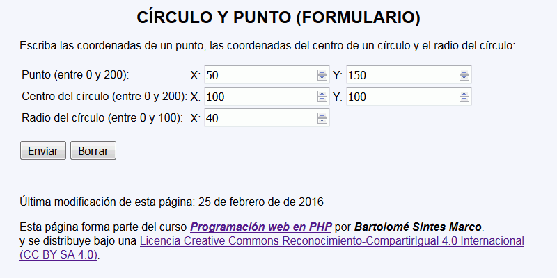
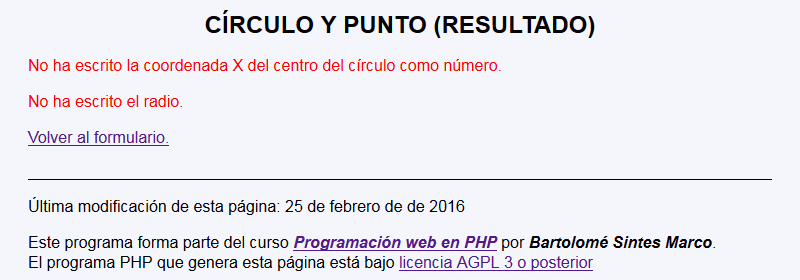
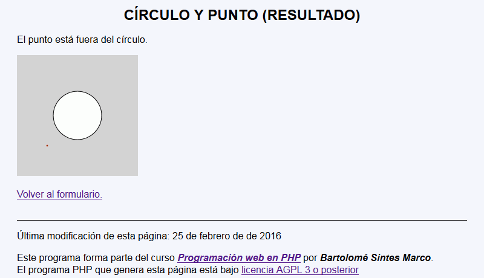
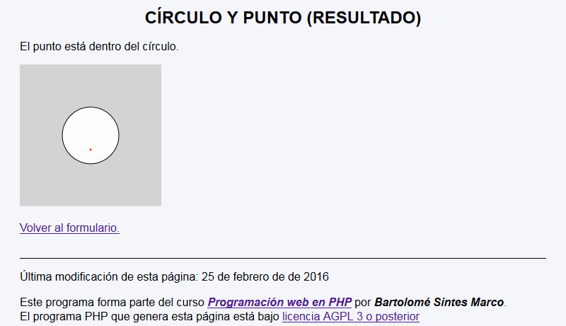

Círculo y punto - Comentarios
- El programa tendrá dos páginas:
- La primera página pide las coordenadas de un punto, las coordenadas del centro de un círculo y el radio de un círculo (entre 0 y 200, 0 y 200 y 0 y 100 respectivamente:

- La segunda página comprueba los valores y avisa si hay errores.

- En el caso de que los valores sean correctos, la segunda página muestra los posibles resultados:


- La primera página pide las coordenadas de un punto, las coordenadas del centro de un círculo y el radio de un círculo (entre 0 y 200, 0 y 200 y 0 y 100 respectivamente:
- Se recuerda que para saber si un punto está dentro, sobre o fuera de un círculo se puede comparar el radio del círculo con la distancia entre el punto y el centro del círculo.
- Se recuerda que la distancia entre dos puntos A(x1, y1) y B(x2, y2) es: